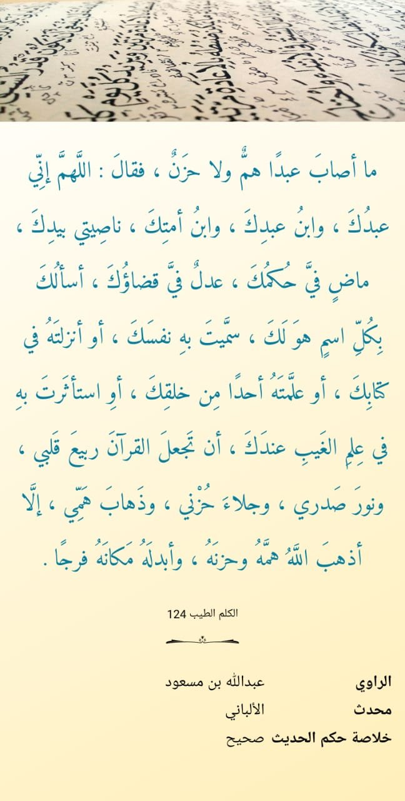

Posts tagged with 'hati'
Doa Al Quran Sebagai Penyejuk Hati
Dalam inti kandungan doa berikut, terdapat beberapa point yang perlu diperhatikan

-
Bagi seorang yang sudah bersahabaat dengan qur'an, maka jelas dia meminta kepada Alloh agar alquran yang selalu dia baca, renungi, amalkan menjadi penyejuk hati dan penghilang rasa gundah.
-
Bagi seorang yang belum, namun ada kemampuan untuk membaca dan memahami, maka ada kandungan permintaan agar Alloh berikan taufiq dia supaya bisa bersahabat dan selalu membaca quran. Sehingga pada akhirnya, quran tersebut akan menjadi pelipur lara dia.
-
Untuk selain mereka, maka terdapat kandungan permintaan kepada Alloh agar Alloh memberikan kepada dia taufiq untuk mempelajari al quran, memahami, mengamalkan. Sehingga tujuan akhir alquran sebagai penghibur dia tatkala sedih tercapai.
-
Rohmahnya Alloh, kalaupun sama sekali dia tidak membaca Alquran, doa ini tetap sangat mungkin terealisasi. Diantaranya adalah Alloh kirimkan orang orang yang menjelaskan kandungan al quran kepada dia, sehingga dia mendapatkan ketenangan dengan bacaan dan penjelasan tersebut.